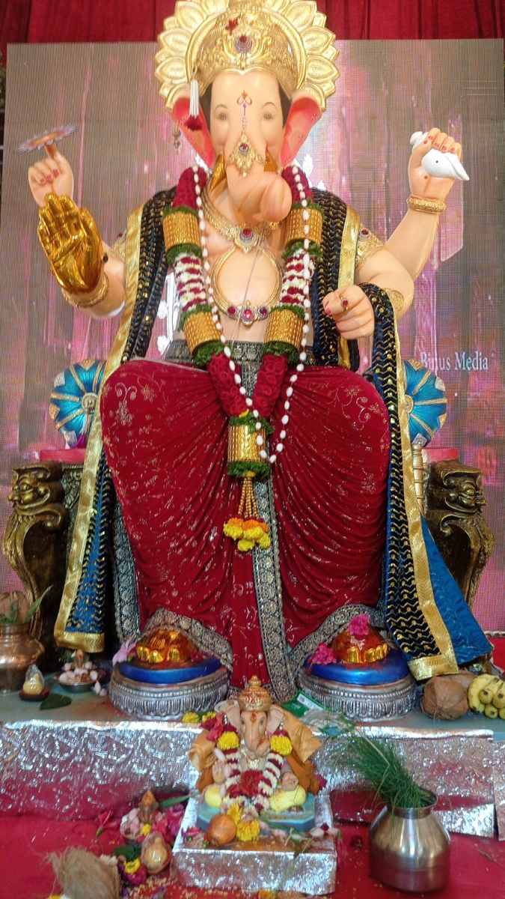

Sthapana
The festival begins as Ganesha is welcomed into homes and pandals. A place is prepared, prayers are offered, and the community gathers for the first aarti.
A HOME FOR BAPPA
A time for devotion, joy & new beginnings
Twelve days of prayer, togetherness and celebration. Join us for Ganeshotsav, from the first welcome to the farewell.
14—25 September, 2026
Ganeshotsav celebrates the birth of Lord Ganesha, the remover of obstacles and the harbinger of wisdom and good fortune. Families and communities welcome Bappa with prayers, offerings, music and open-hearted hospitality.
In 2026, the celebration begins on Monday, 14 September, and concludes on Friday, 25 September, with Anant Chaturdashi and the traditional visarjan.
Discover the 12 daysMORE THAN A CELEBRATION
Every family has its own way of welcoming Bappa. These cherished moments bring devotion, generosity and community together.
The festival begins as Ganesha is welcomed into homes and pandals. A place is prepared, prayers are offered, and the community gathers for the first aarti.
A HOME FOR BAPPADaily worship is filled with flowers, lamps, songs and offerings. Modak is a much-loved festive sweet, shared as prasad with family and visitors.
AN OFFERING FROM THE HEARTOn the final day, prayers and a procession mark Bappa's farewell. Visarjan reflects the cycle of creation and return—and the promise to welcome him again.
UNTIL WE MEET AGAINRituals and practices differ between families and regions. Follow the customs that are meaningful to your community.
From the first aarti to the final procession, every day is a chance to pause, pray and come together.
Welcome the beloved elephant-headed deity home or to your community pandal. Begin the festivities with sthapana, prayers and aarti.
THE GRAND WELCOMEContinue daily worship with flowers, durva grass and a heartfelt offering to Bappa.
Gather with loved ones for aarti and make time for a quiet moment of gratitude.
Visit a neighbourhood pandal, admire its decorations and share in the community spirit.
Make room for music, stories and a festive meal with family, friends and neighbours.
Take a little extra time for darshan and discover the artistry of local celebrations.
Celebrate the spirit of generosity with a thoughtful act of kindness in your community.
Carry the festival's calm into the week with a prayer, aarti or a few minutes of reflection.
Join a bhajan or aarti and celebrate the traditions that bring generations together.
As the final days approach, make time to offer thanks for the blessings of the festival.
Come together for prayers and prepare to bid Bappa a loving, joyful farewell.
Conclude the festival with prayers and visarjan. With gratitude, devotees say goodbye until next year.
GANPATI BAPPA MORYA!Daily observances vary by family, community and local tradition. Please follow your local organisers for puja and procession timings.
A little glimpse of the love, craft and devotion that make each darshan special. Select a photograph to take a closer look.
Tap each lamp to fill the evening with light. When all five are glowing, a blessing awaits.
0 of 5 diyas lit